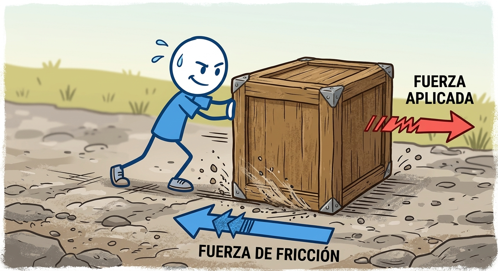
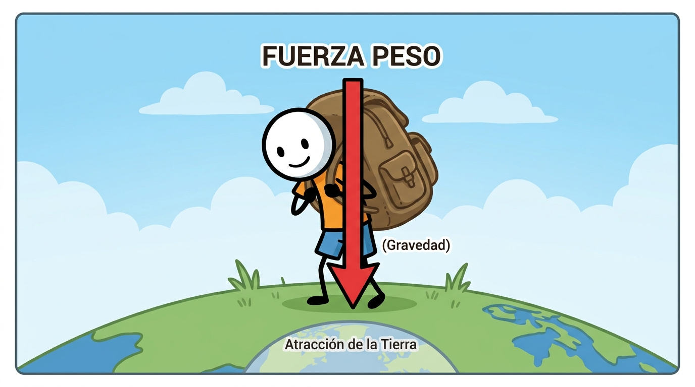
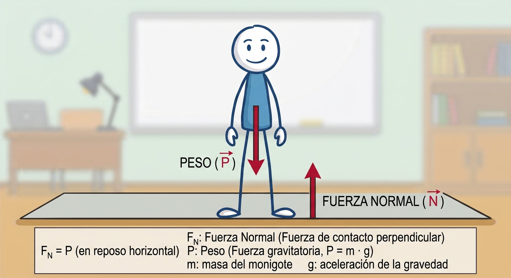
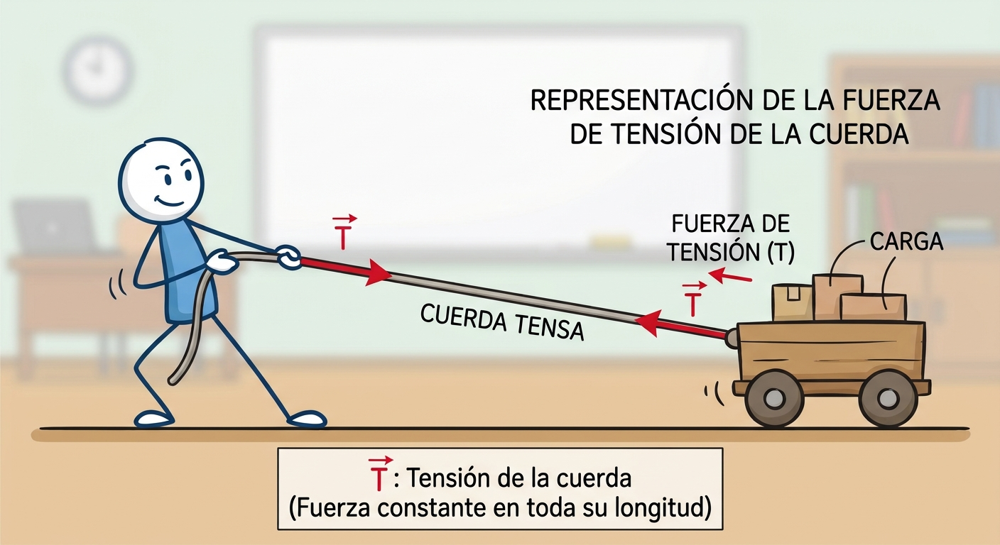
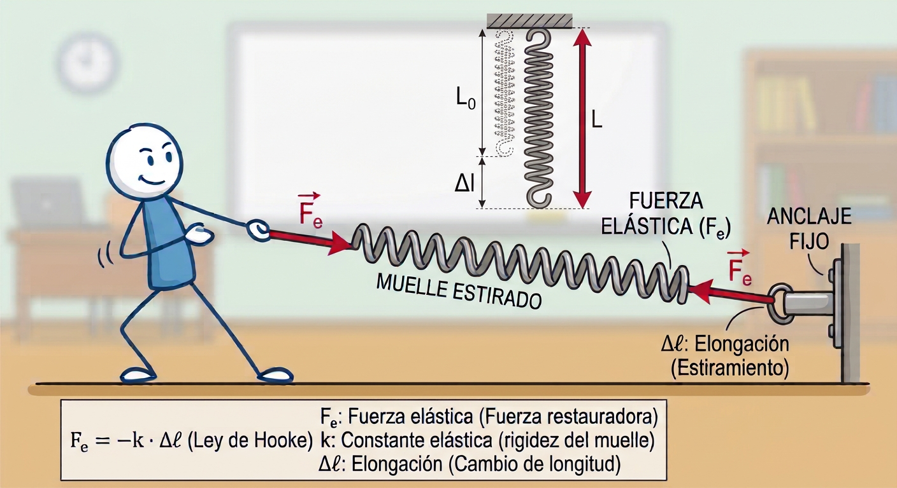
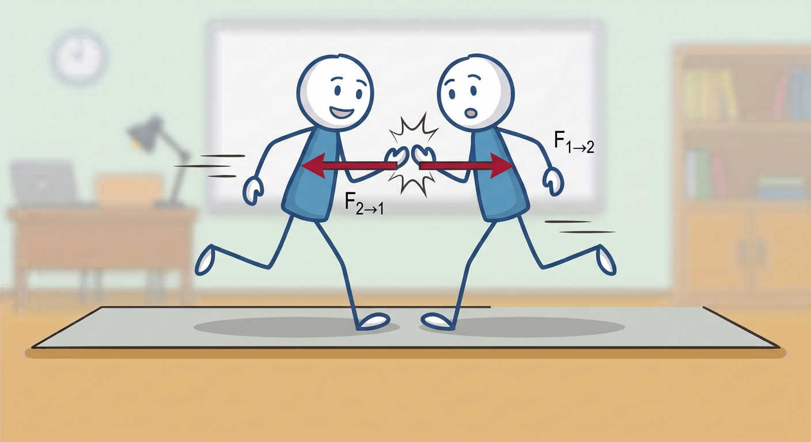

Fuerza de fricción
Se opone al movimiento de los cuerpos y tiende a pararlos.

Imagen generada por IA (Gemini) CC BY-SA 4.0
Fuerza peso
Fuerza de gravedad con la que nuestro planeta atrae a los objetos.

Imagen generada por IA (Gemini) CC BY-SA 4.0
Fuerza normal
Fuerza perpendicular (normal) a la superficie de apoyo de los objetos.

Imagen generada por IA (Gemini) CC BY-SA 4.0
Tensión
Fuerza que ejercen los hilos, cuerdas, cables,... sobre los cuerpos a los que están atados en un extremo cuando tiramos del otro.

Imagen generada por IA (Gemini) CC BY-SA 4.0Fuerza elástica
Fuerza que ejercen los cuerpos elásticos a sí mismos para recuperar su forma original.

Imagen generada por IA (Gemini) CC BY-SA 4.0Fuerza de colisión
Fuerza que se ejercen mutuamente dos cuerpos cuando chocan.

Imagen generada por IA (Gemini) CC BY-SA 4.0